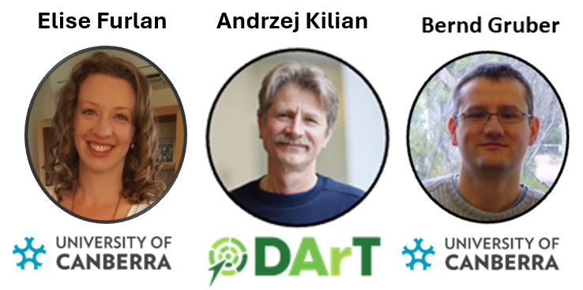

library(dartRverse)
library(knitr)6 SNP Panel Selection & Simulations for Conservation
Session Presenters

Required packages
Session Content
Session Content
This session will cover the selection of SNP panels for conservation genetics. We will explore how to select SNPs that are informative for population structure, inbreeding, and other conservation-related analyses. The session will include practical exercises using R and the dartRverse packages.
Selecting panels
To select panels we will use an example dataset of a fish species as introduced by the slides. The idea is to select a SNP panel that helps to monitor the species. Key aspects to consider a panel is to think about the following:
- What is the purpose of the panel? (estimates of Ne, Ho, Fst or all of the above)
- How many SNPs can you afford to sequence?
Once you decided on those aspects, you can use the dartRverse package to select a panel of SNPs. The package provides functions to - 1. filter SNPs based on various criteria, mainly for quality - 2. filter SNPs in accordance lab consideration (mainly can we get reliable sequences from the SNPs) - 3. select of the remaining SNPs an informative subsample for the purpose of the panel
Example data
The first two decisions are that we would like to create a SNP panel that is informative for population structure (Fst) and we have resources to develop a panel of 50 SNPs.
Lets load our example data
rfbe <- readRDS("./data/rfbe.rds")
gl.report.basics(rfbe)Starting gl.report.basics
SUMMARY STATISTICS
Datatype: SNP
Loci: 9849
Individuals: 383
Populations: 16
Average Read Depth: 28.70085
Values: 3772167
0 1 2 NA
percent 65.5 22.0 11.2 1.3
Monomorphic Loci: 2
Loci all NA: 0
Individuals all NA: 0
Sample Sizes:
BHA_A2 E504 E508 E509 E518 NW30 NW70
19 19 20 20 20 20 20
NW72 NW80 PJTub1.2.3 PJTub4.5 PJTub6 SE60 SW10
10 10 64 51 33 20 19
SW20 SW60
18 20
Loci all NA across individuals by Population
BHA_A2 E504 E508 E509 E518 NW30 NW70 NW72 NW80 PJTub1.2.3 PJTub4.5 PJTub6 SE60
0 0 0 0 0 0 0 0 0 0 0 0 0
SW10 SW20 SW60
0 0 0
Individuals all NA across loci by Population
BHA_A2 E504 E508 E509 E518 NW30 NW70 NW72 NW80 PJTub1.2.3 PJTub4.5 PJTub6 SE60
0 0 0 0 0 0 0 0 0 0 0 0 0
SW10 SW20 SW60
0 0 0
Completed: gl.report.basics Filtering for quality
So we have 9849 SNPs (they are prefiltered for quality already). You can check the looking at callrate, rdepth). So we already have high quality SNPs, with a low missing value rate across loci.
our main aim is to find a panel of 50 SNPs that are informative for population structure (Fst).
To be able to calculate Fst reliably we decided to have a threshold of more than 10 individuals per population so we filter the SNPs for a minimum of 11 individuals per population.
tt <- table(pop(rfbe))
pop20 <- names(tt)[tt>10]
rfbe20 <- gl.keep.pop(rfbe, pop.list=pop20)Starting gl.keep.pop
Processing genlight object with SNP data
Checking for presence of nominated populations
Retaining only populations BHA_A2, E504, E508, E509, E518, NW30, NW70, PJTub1.2.3, PJTub4.5, PJTub6, SE60, SW10, SW20, SW60
Warning: Resultant dataset may contain monomorphic loci
Locus metrics not recalculated
Completed: gl.keep.pop kable(table(pop(rfbe20)))| Var1 | Freq |
|---|---|
| BHA_A2 | 19 |
| E504 | 19 |
| E508 | 20 |
| E509 | 20 |
| E518 | 20 |
| NW30 | 20 |
| NW70 | 20 |
| PJTub1.2.3 | 64 |
| PJTub4.5 | 51 |
| PJTub6 | 33 |
| SE60 | 20 |
| SW10 | 19 |
| SW20 | 18 |
| SW60 | 20 |
Because we have filtered the data by individual we want to make sure we have not created missing data in any of the populations and we want to filter also finally for minor allele frequency (MAF) using the count option as we want to make sure we have high quality SNPs which are not spurious in terms of aonly occuring in very low frequency.
You can use the report function before filtering to test their effect.
rfbe20_1 <- gl.filter.allna(rfbe20, by.pop = T)Starting gl.filter.allna
Identifying and removing loci that are all missing (NA)
in any one population
Deleting loci that are all missing (NA) in any one population
Warning: no loci listed to delete! Genlight object returned unchanged
Completed: gl.filter.allna rfbe20_2 <- gl.filter.callrate(rfbe20_1, threshold=0.99)Starting gl.filter.callrate
Processing genlight object with SNP data
Warning: Data may include monomorphic loci in call rate
calculations for filtering
Recalculating Call Rate
Removing loci based on Call Rate, threshold = 0.99 Completed: gl.filter.callrate rfbe20_3 <- gl.filter.maf(rfbe20_2, threshold = 5, by.pop = FALSE)Starting gl.filter.maf
Processing genlight object with SNP data
Warning: genlight object contains monomorphic loci
Removing loci with MAF < 0.0068870523415978 over all the dataset
and recalculating FreqHoms and FreqHetsCompleted: gl.filter.maf nLoc(rfbe20_3)[1] 6815This should result in high quality SNPs.
If you have a reference genome you would like to filter for SNPs that are 100% aligned and of a certain length. For example you want to make sure the sequences you have are at least of a certain length.
Filter SNPs with sequences that are less than 30 characters long
index <- nchar(as.character(rfbe20_3@other$loc.metrics$TrimmedSequence))>29
rfbe20_4 <- rfbe20_3[, index]As we have a reference genome we include another step, manly to filter for SNPs that are aligned very well to the reference genome. This is important and can help if your SNP is towards the beginning of your sequence but you want to design primers that have the SNP more towards the middle of a sequence.
blast to find SNPs
#takes a while to run, hence load the pre run data set
#rfbe20_5 <- gl.blast(rfbe20_4,ref_genome = "d:/bernd/r/Elise_pansnp/final.genome.scf.fasta", task = "blastn", number_of_threads = 10 )
#saveRDS(rfbe20_5, "d:/bernd/r/Elise_pansnp/rfbe20_5_blast.rds")
rfbe20_5 <- readRDS("./data/rfbe20_5_blast.rds")We can now filter the SNPs based on the blast results.
#bitscore >=100
index <- rfbe20_5@other$loc.metrics$bitscore >= 100
index <- ifelse(is.na(index), FALSE, index)
rfbe20_6 <- rfbe20_5[,index]Depending on your lab requirements you might want to filter for SNPs that are not too close to close to the beginning of the sequence. As we have a reference genome, that allows us to extend sequences, we do not do that here. In case you are interested we are currently have a semi-developed script that allows to do this, but it is not yet part of the package.
Selecting informative SNPs
We can now selected a subsample of SNPs using several different methods. Depending on the aim of your panel you might want to select SNPs that are informative for population structure (Fst) or inbreeding (Ho). It turns out that the dapc method is a good method to select SNPs that are informative for population structure. The code below uses this method to select 50 SNPs.
###run gl.select.panel
#takes a while to run
panel <- gl.select.panel(rfbe20_6, method="dapc", nl = 50)Starting gl.select.panel
Processing genlight object with SNP dataFound more than one class "dist" in cache; using the first, from namespace 'BiocGenerics'Also defined by 'spam'Found more than one class "dist" in cache; using the first, from namespace 'BiocGenerics'Also defined by 'spam'Starting gl.keep.loc
Processing genlight object with SNP data
List of loci to keep has been specified
Deleting all but the specified loci
Completed: gl.keep.loc
Completed: gl.select.panel nLoc(panel)[1] 66run gl.check.panel
outdapc <- gl.check.panel(panel, rfbe20_6, parameter = "Fst")`geom_smooth()` using formula = 'y ~ x'As we can see Fst values between populations is nicely reconstructed by selecting only 50 SNPs based on the dapc method. We can compare it to a random selection:
panel_random <- gl.select.panel(rfbe20_6, method="random", nl = 50)Starting gl.select.panel
Processing genlight object with SNP data
Starting gl.keep.loc
Processing genlight object with SNP data
List of loci to keep has been specified
Deleting all but the specified loci
Completed: gl.keep.loc
Completed: gl.select.panel outrandom <- gl.check.panel(panel_random, rfbe20_6, parameter = "Fst")`geom_smooth()` using formula = 'y ~ x'Not as good so it pays off.
Exercise

Now it is time for you to select a SNP panel. You can try differen methods and compare them. E.g How good is a random panel, or one based on PIC values.